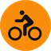

Loading…
Drag the corners to resize, the top handle to move.
Traffic here is a rough estimate from the road types.
Brighter roads carry more of the good ways from start to end.
The search width follows each Automatic segment's length: 0.17 × the distance between its two points (1.5 to 25 km either side), so a 100 km segment looks 17 km either side.
Your taste in road types, on top of traffic and climbing: ×0.5 prefer … ×3 avoid.
Region road data kept in this browser: